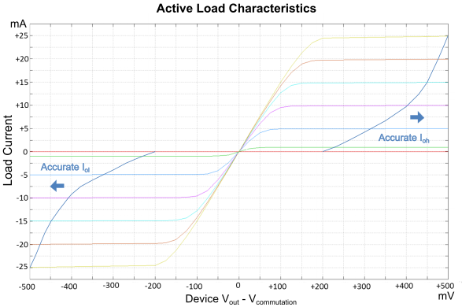

Pin Scale 5000 programmable load
The programmable load is not available for fast mode.
| Programmable load | ||
|---|---|---|
| Load current range (IOH, IOL) | 0 mA to 25 mA | |
| Current resolution | 12.5 µA | |
| Current accuracy | ± 75 µA ±0.5% | |
| Commutation voltage range (VCOM) at |VGS| ≤ 100 mV | IOH, IOL < 1 mA | -1.5 V to +6.5 V |
| IOH, IOL ≥ 1 mA | -1.0 V to +5.5 V | |
| Commutation voltage resolution | 1 mV | |
| Commutation voltage accuracy | ± 100 mV | |
Active load

Functional changes
- Introduced in SmarTest 7.10.2